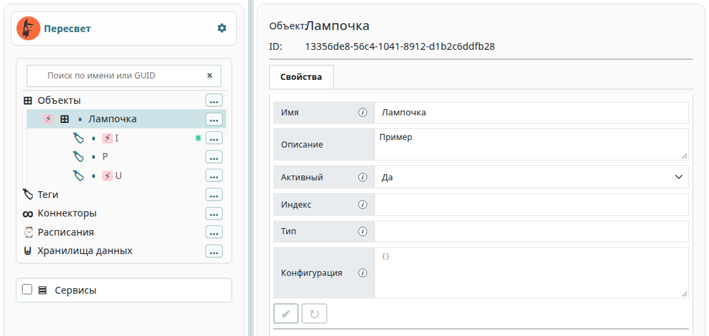
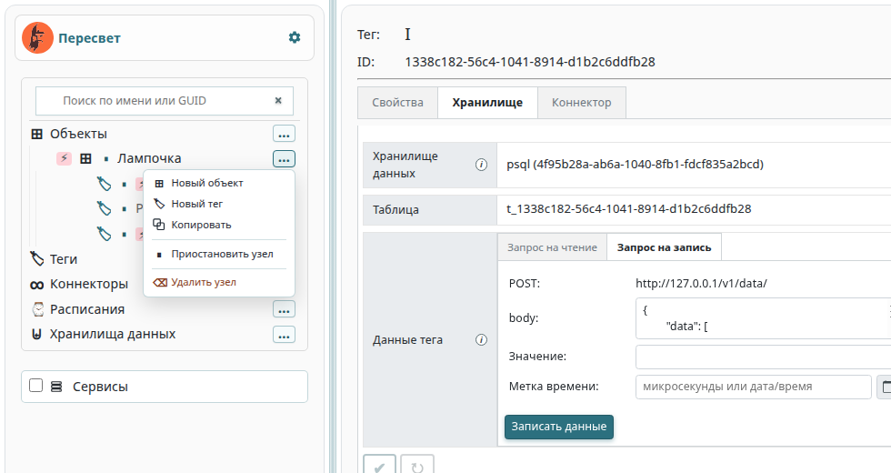
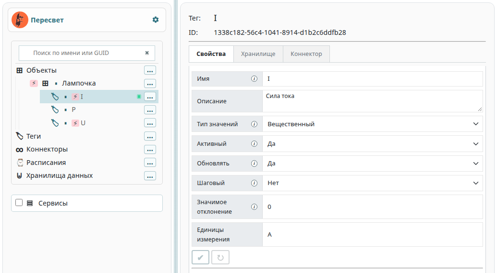
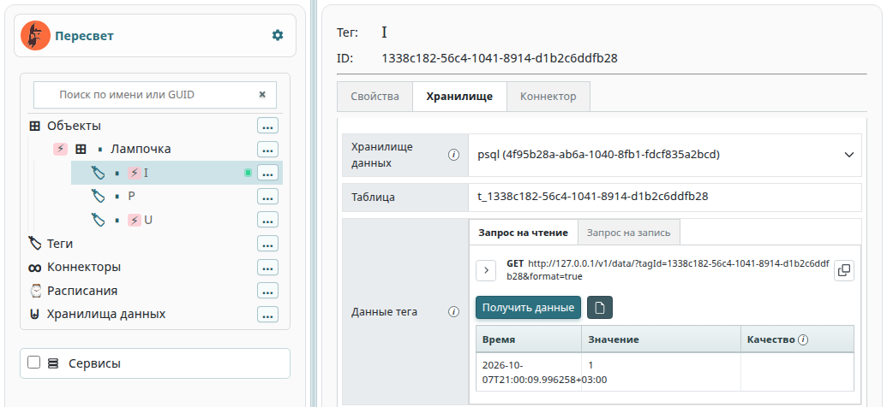
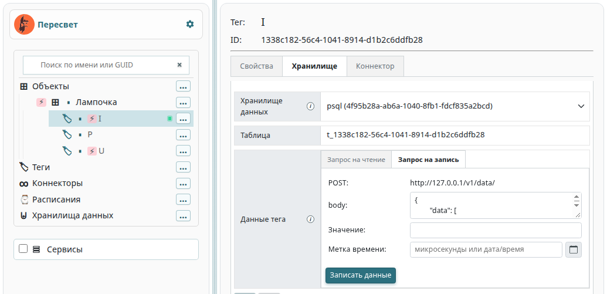
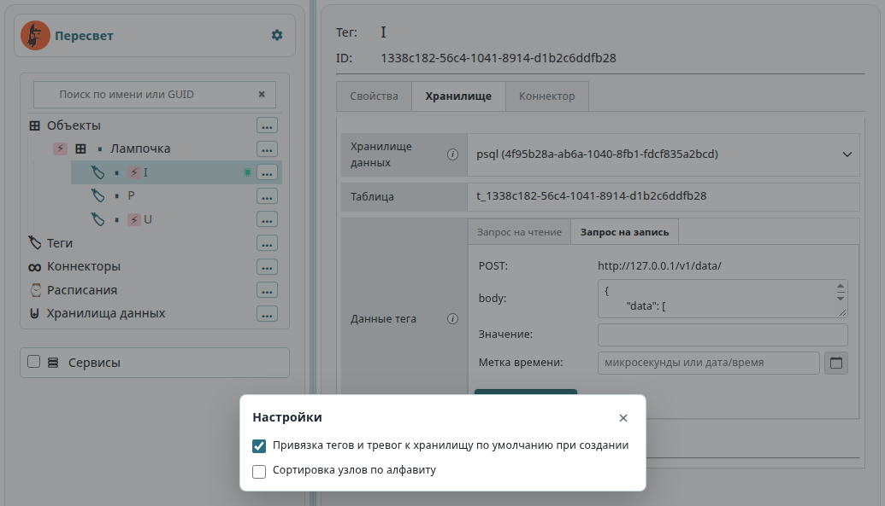

Конфигуратор модели
Конфигуратор — главная панель Grafana и основной инструмент работы с моделью. В нём создают и настраивают объекты, теги, тревоги, методы, коннекторы, расписания и хранилища данных, читают и пишут значения тегов, следят за тревогами и смотрят журналы сервисов платформы.
Всё, что делает конфигуратор, он делает через HTTP API платформы. Любое действие в нём можно повторить запросом из своей программы.
Как открыть
Запустите платформу (Установка и запуск) и откройте в браузере
https://<адрес из PRS_IP>/grafana. На самом сервере работает и
https://localhost/grafana. Сертификат самоподписанный, поэтому браузер
покажет предупреждение — подтвердите переход.
При первом входе имя и пароль — admin / admin. Grafana предложит
сменить пароль.

Слева дерево модели, справа свойства выбранного узла.
Экран разделён на две колонки. Слева три отдельных блока: заголовок «Пересвет», дерево модели и «Сервисы» с журналами платформы. Между ними виден фон панели. От края панели блоки отступают на то же расстояние, что и от линии разделителя. Внутри дерева и списка сервисов отдельной рамки нет. Справа — свойства узла, выбранного в дереве. Граница между колонками и граница между деревом и блоком «Сервисы» двигаются мышью: это тонкая линия с ручкой посередине.
Над деревом стоит надпись «Пересвет». Под ней мелким шрифтом показана версия платформы, сама надпись открывает эту документацию, шестерёнка рядом — настройки (см. Настройки).
Дерево модели
Корневые папки
На верхнем уровне дерева лежат служебные папки, по одной на вид сущностей:
Папка |
Что в ней |
|---|---|
Объекты |
Основная иерархия модели: объекты, в них — вложенные объекты и теги, у тегов — тревоги и методы. |
Теги |
Теги, не привязанные к объектам. Удобно, если модель — просто список параметров. |
Коннекторы |
Программы, которые приносят данные с оборудования (Коннекторы), в том числе видеокамеры (Подключение видеокамер). |
Расписания |
Генераторы событий по времени (Расписания). |
Методы |
Каталог методов: общие определения, на которые ссылаются теги и тревоги (Методы). |
Хранилища данных |
Базы, куда пишутся история тегов и эпизоды тревог (Хранилища данных). |
Пользовательские папки
Чтобы разложить узлы по группам, создайте папку командой «Новая папка». Она есть в меню корневых папок, объекта и другой пользовательской папки. Что можно положить в папку, зависит от ветки, в которой она лежит:
в ветке «Объекты» — папки, объекты и теги;
в ветке «Теги» — папки и теги;
в остальных ветках — папки и узлы этой ветки: коннекторы, расписания, хранилища или методы каталога.
Папки влияют только на вид дерева: тег в папке пишет и читает данные так же, как без неё. Удаление папки удаляет и всё её содержимое.
Порядок и поиск
Внутри одного родителя узлы сначала группируются по виду: папки, объекты,
теги, тревоги, методы, коннекторы, расписания, хранилища. Внутри вида
порядок задаёт индекс узла (атрибут prsIndex); в настройках можно
включить сортировку по имени.
Поле «Поиск по имени или GUID» над деревом ищет узлы по имени или идентификатору. Выбор найденной строки раскрывает ветку до этого узла и выделяет его. Подсказка на имени любого узла показывает его описание.
Пометки в дереве
Конфигуратор помечает узлы, с которыми что-то не так. Пометка стоит слева от имени — проблема у самого узла, или справа, перед кнопкой меню, — проблема где-то ниже по ветке. Пометка справа поднимается до самого верхнего объекта, в том числе через папки, но не на корневые папки. Нажатие на пометку открывает список проблем.
Пометка |
Что означает |
|---|---|
Перечёркнутый круг |
Тег или тревога не привязаны к хранилищу: история не пишется. |
Молния |
У тега нет источника данных: ни коннектора, ни дочернего метода. Пометку можно отключить в настройках. |
Восклицательный знак |
Тег привязан к хранилищу и при этом имеет метод чтения или записи. Отвечать на запрос будут оба, и платформа возьмёт первый ответ (см. Методы). |
Бирка с крестом |
У метода есть параметр «Данные тега(-ов)», в котором не выбран тег. |
Кружок с крестом |
У вычислительного метода тега или тревоги не выбран ни один инициатор, и он никогда не запустится. |
Пауза |
Узел выключен (признак «Активный» снят). Имя такого узла бледнее. |
Кружок у коннектора |
Связь с коннектором: зелёный — на связи, красный — нет, серый — состояние ещё не получено. Обновляется примерно раз в пять секунд. У камеры кружок зелёный, пока сервис захвата видео держит соединение с ней. |
Пульсирующий красный кружок |
В узле или ниже по ветке есть тревога, требующая внимания: активная или пропавшая, но не квитированная (см. Тревоги). |
Своя пометка стоит и у хранилища по умолчанию.
Цвет значка тега показывает, какие у тега методы:
Цвет |
Что означает |
|---|---|
Зелёный |
Обычный тег: методов чтения, записи и вычисления нет. |
Оранжевый |
Есть вычислительный метод (тип |
Бирюзовый |
Есть метод записи (тип |
Фиолетовый |
Есть метод чтения (тип |
Методы «Действие при чтении» и «Действие при записи» (типы 3 и 4)
цвет не меняют.
Перетаскивание
Объекты, теги, коннекторы, расписания, хранилища и пользовательские папки переносят мышью: узел, отпущенный на объект или папку, становится его потомком. Корневые папки не перетаскиваются, а перенести узел внутрь его собственной ветки нельзя.
Можно перенести сразу несколько узлов одного вида:
Ctrl(на macOS —Cmd) добавляет строку к выделению;Shiftвыделяет диапазон соседних узлов того же вида;перетаскивание любой выделенной строки переносит всю группу;
обычный щелчок снимает выделение.
Команды узла
Кнопка «…» справа в строке узла открывает меню команд. В меню только те команды, которые допустимы для этого узла.

Узел |
Команды |
|---|---|
Папка «Объекты» |
Новая папка, новый объект |
Объект |
Новая папка, новый объект, новый тег, копировать, приостановить, удалить |
Пользовательская папка |
Новая папка и узлы, допустимые в этой ветке; приостановить, удалить |
Папка «Теги» |
Новая папка, новый тег |
Тег |
Новая тревога, новый метод, копировать, приостановить, удалить |
Тревога |
Новый метод, копировать, приостановить, удалить |
Папка «Методы» и папки внутри неё |
Новая папка, новый метод, загрузка описания; у вложенных папок ещё приостановить, удалить |
Метод |
Копировать, приостановить, удалить |
Папка «Коннекторы» |
Новая папка, новый коннектор |
Коннектор |
Приостановить, удалить |
Папка «Расписания» |
Новая папка, новое расписание |
Расписание |
Приостановить, удалить |
Папка «Хранилища данных» |
Новая папка, новое хранилище |
Хранилище |
Приостановить, удалить |
Привязка тега к коннектору или хранилищу |
Перейти к тегу, удалить |
Кроме того, в меню каждого узла есть команда Тревоги (см. Тревоги).
Новый узел создаётся с настройками по умолчанию и именем, равным его идентификатору. Его свойства сразу открываются справа — там узел и переименовывают.
Копировать создаёт копию узла со всеми потомками рядом с исходным. Если имя занято, к нему добавляется «(копия)». Для объекта конфигуратор сначала спрашивает имя копии.
Приостановить и Включить снимают и ставят признак «Активный» у узла и у тех его потомков, которые раскрыты в дереве. Нераскрытые ветки не затрагиваются: перед приостановкой раскройте всё, что нужно выключить.
Удалить удаляет узел со всеми потомками.
Копирование, приостановка и удаление требуют подтверждения. Закрыть меню
можно клавишей Escape или щелчком мимо него.
Свойства узла
Правая колонка показывает имя, идентификатор и поля выбранного узла. Имя, описание и признак «Активный» есть почти у всех узлов, остальные поля зависят от вида узла:
Узел |
Поля |
|---|---|
Объект |
Индекс, код типа, конфигурация. |
Тег |
Тип значений (целый, вещественный, строковый, JSON, интеграционный, видеопоток), «Обновлять», «Шаговый», значимое отклонение, единицы измерения, конфигурация. Что значат эти поля — в справочнике Теги. |
Тревога |
Условие (значение тега |
Метод |
См. Методы. |
Коннектор |
Конфигурация, флажок «Лог в платформу», журнал и команды (см. Коннектор: журнал и команды). |
Расписание |
Начало, конец и шаг (Расписания). |
Хранилище данных |
Признак «по умолчанию», код типа, конфигурация (Хранилища данных). |

Изменённое поле выделяется бирюзовой рамкой. Под формой две кнопки: галочка записывает изменения в платформу, круглая стрелка отменяет их и заново читает узел из платформы.
Рядом с подписью поля стоят значки: подсказка (есть у каждого поля), ссылка на документацию и у некоторых полей — копирование значения. Имя и идентификатор узла копируются кнопками в заголовке.
Конфигурация — редактор JSON с нумерацией строк. Если в JSON есть ошибка, редактор подсвечивает строку и показывает, где ошибка; пока ошибка не исправлена, узел не записывается. Кнопки над полем форматируют JSON и отменяют правки в поле.
Признак «Активный» при записи меняется только у этого узла. Чтобы выключить ветку целиком, используйте команду «Приостановить».
Тег: данные, хранилище и коннектор
У тега справа есть вкладки Данные, Хранилище и Коннектор, у тревоги — только Хранилище.
Вкладка «Данные»
Блок «Данные тега» читает и пишет значения тега прямо из конфигуратора. Вкладка есть у каждого тега: значения могут приходить из хранилища или из метода чтения, привязка к хранилищу для этого блока не нужна. У тега «Видеопоток» здесь же открывается просмотр камеры (Подключение видеокамер).
Вкладка «Хранилище»
Здесь выбирают хранилище, в которое пишутся история тега или эпизоды тревоги. Узел привязывается к одному хранилищу: выбор другого отвязывает его от прежнего.
Предупреждение
При отвязке PostgreSQL удаляет таблицу с историей. Смена хранилища историю не переносит: в прежнем хранилище она пропадает.
У тревоги на этой вкладке лежит блок «Данные тревоги» (см. Тревоги).
Тег «Видеопоток» привязывают к коннектору-камере и к хранилищу видео, а не к хранилищу истории.
Вкладка «Коннектор»
Здесь выбирают коннектор, от которого тег получает данные, и задают
параметры привязки в JSON: адрес значения в источнике, выражение JSONata,
значимое отклонение, период опроса (Коннекторы). Формат
ключа source задаёт конкретный коннектор. Кнопка записи сохраняет
и свойства тега, и привязку.
Данные тега
Блок «Данные тега» на вкладке Данные читает и пишет значения тега.
Чтение. Поля блока — это ключи запроса
исторических данных: format, actual,
start, finish, count, value, timeStep, maxCount.
У каждого есть подсказка и ссылка на описание. format включён
по умолчанию: метки времени приходят строками ISO 8601. Для start
и finish есть календарь; в эти поля можно вставить дату, скопированную
из таблицы ответа. У интеграционного тега есть ещё поле params
(Интеграционные хранилища).
Над полями показан готовый запрос GET, кнопка рядом копирует его.
Значок Читать данные выполняет запрос и выводит таблицу
«Время / Значение / Качество». Коды качества описаны в разделе
Коды качества.

Запись. Задайте значение и, если нужно, метку времени. Пустая метка
означает текущий момент; метку можно указать целым числом микросекунд
или датой со временем. Тело запроса POST /v1/data/ собирается
по мере ввода, значение приводится к типу тега. Значок Записать данные
отправляет запрос. У видеопотока записи нет.

Экспорт в CSV. После успешного чтения доступна кнопка
Сохранить в CSV. Файл называется <имя тега> :: <дата и время>.csv.
В начале файла — имя и идентификатор тега и полный запрос, затем строка
заголовка x,y,q и сами точки. Если запрос содержит что-то похожее
на пароль или токен, конфигуратор попросит подтвердить сохранение.
Любое изменение запроса очищает таблицу: экспорт снова станет доступен
после следующего чтения.
Методы
Как устроены и пишутся методы, описано в разделе Методы. Здесь — работа с ними в конфигураторе.
Метод создают командой Новый метод в меню тега или тревоги. Поле «Метод/ссылка» в свойствах определяет, что это будет:
новый метод — адрес, параметры и инициаторы задаются прямо у него;
ссылка на метод каталога — адрес и список параметров берутся из определения в папке «Методы», которое выбирают в поле «Метод каталога». Адрес у ссылки не меняется.
Поле Тип задаёт, когда вызывается метод:
Код |
Тип |
Когда вызывается |
|---|---|---|
|
Вычислительный |
По событию инициатора: новому значению тега, срабатыванию расписания или выбранному событию тревоги. Результат пишется в тег. |
|
Чтение |
При чтении тега. Отвечает на чтение вместо хранилища. |
|
Запись |
При записи в тег. Принимает запись вместо хранилища. |
|
Действие при чтении |
При каждом чтении тега, но не отвечает на него. |
|
Действие при записи |
При каждой записи в тег, но не отвечает на неё. |
Инициаторы
Инициаторы — теги, расписания и тревоги, события которых запускают вычислительный метод. Они разложены по трём вкладкам. Лупа открывает поиск: узел ищут по имени, пути или идентификатору и отмечают сразу несколько. Выбранные узлы стоят в списке рядом с лупой; повторный выбор снимает отметку.
У каждой тревоги-инициатора свой набор событий: срабатывание, пропадание, квитирование. По умолчанию — только срабатывание; снять все флажки нельзя.
Пока у вычислительного метода нет ни одного инициатора, лупа красная, блок «Инициаторы» и вкладка «Свойства» подсвечены розовым, а в дереве у метода стоит кружок с крестом.
Параметры
Параметры открываются вкладкой «Параметры» рядом со «Свойствами». Каждый параметр — своя вкладка; в метод они передаются в порядке вкладок: первая вкладка — первый аргумент. Имя параметра — подпись для человека, при вызове учитывается только порядок.
Источник значения параметра:
Данные тега(-ов) — запрос
GET /v1/data/к выбранным тегам. Тегов может быть несколько, все попадают в один запрос. Пока тег не выбран, вкладка параметра подсвечена розовым;Данные из запроса клиента — запрос, которым клиент читает тег (для методов чтения);
Запрос к платформе — ключ маршрутизации и сообщение внутреннему сервису платформы;
Внешний запрос — произвольный HTTP(S)-запрос: метод, адрес, заголовки, тело.
К ответу любого источника можно применить выражение JSONata.
У источника «Данные тега(-ов)» поле Запрос — редактор тела запроса
в JSON. В него можно дописать любые ключи, например операцию
интеграционного тега. Стрелка раскрывает отдельные поля запроса
(у start и finish есть календарь). Под полем собирается адрес
запроса, а стрелка рядом с ним выполняет запрос и показывает ответ
платформы.
У ссылки на метод каталога число, имена и описания параметров берутся из каталога — задают только источники. Если в определении включены «Произвольные параметры», ссылка задаёт свой список, параметры добавляют кнопкой «+».
Определение в каталоге
Метод в папке «Методы» — определение: адрес и список параметров (имя, описание, порядок). Инициаторов и источников у определения нет. Поле «Произвольные параметры»:
«Нет» — список параметров задан в каталоге и одинаков у всех ссылок;
«Да» — число параметров задаёт каждая ссылка.
Команда Загрузка описания в меню папки «Методы» загружает набор папок и методов из файла YAML (Загрузка описания).
Тревоги
Тревогу создают в меню тега, её свойства описаны в разделе Тревоги.
Кружок в дереве
Пульсирующий красный кружок означает, что в узле или ниже по ветке есть тревога, требующая внимания: активная (квитированная или нет) или пропавшая, но не квитированная. У самой тревоги кружок стоит после её значка, у родителей — справа в строке. Когда таких тревог не остаётся, кружок исчезает. Конфигуратор обновляет кружки примерно раз в пять секунд.
Список тревог
Команда Тревоги в меню любого узла открывает справа вместо свойств список тревог этой ветки. Щелчок по строке дерева закрывает список.
Сверху показан запрос GET /v1/alarms/, по которому собран список,
и его ключи: parentId (выбранный узел, не меняется), getChildren,
format, fired, start, finish, count. Смысл ключей
описан в справочнике Тревоги. Изменение ключа сразу меняет
запрос, значок Читать данные выполняет его.
По умолчанию fired включён, и список показывает тревоги, активные
сейчас. Чтобы увидеть и пропавшие неквитированные, выключите fired:
тогда в списке будет по строке на каждую тревогу ветки. Чтобы увидеть
историю эпизодов, задайте ещё start или count.
В строке тревоги:
имя тревоги и путь до неё, например
Цех→Насос→Уровень;состояние: «Активна, не квитирована», «Активна, квитирована» или «Пропала, не квитирована»;
метки «Старт», «Финиш» и «Квитирование»;
кнопка Квитировать, пока тревога не квитирована.
Щелчок по строке раскрывает тревогу в дереве и открывает её свойства. Пока список открыт, он обновляется примерно раз в три секунды.
Данные тревоги
На вкладке Хранилище тревоги лежит блок «Данные тревоги». Он устроен
так же, как блок «Данные тега», но читает эпизоды этой тревоги запросом
GET /v1/alarms/ с ключами format, fired, start, finish,
count и выводит таблицу из трёх меток эпизода.
Расписания
Расписание создают в меню папки «Расписания» и задают ему начало, конец и шаг. Метод подписывается на расписание так же, как на тег: расписание выбирают на вкладке «Расписания» его инициаторов. Подробно — в разделе Расписания.
Коннектор: журнал и команды
Флажок Лог в платформу включает передачу журнала коннектора в платформу. Ниже две вкладки.
Лог коннектора — последние строки журнала. Пауза останавливает обновление на экране (платформа продолжает принимать строки), стрелка вниз сохраняет видимый текст в файл.
Команды коннектору — команды оболочки, которые коннектор выполнит на своей машине, по одной на строку. Под полем видны ответ платформы и вывод, который вернул коннектор. Подробнее — в разделе Коннекторы.
У камеры вкладки команд нет: поворотом и изображением управляют у тега видеопотока (Подключение видеокамер).
Хранилища данных
Папка «Хранилища данных» показывает справа карточки всех хранилищ. Под
каждым хранилищем в дереве перечислены привязанные к нему теги и
тревоги. Привязка названа путём до узла: объекты и папки до тега или
тревоги через стрелку →. Саму привязку задают на вкладке
Хранилище тега или тревоги.
Щелчок по привязке открывает её параметры. У хранилища истории это таблица, у видеоархива — каталог и срок хранения.
У привязки к интеграционному хранилищу задают операции чтения и записи: имя, описание, выражения параметров и признак операции по умолчанию. Первая созданная операция каждого вида сразу становится операцией по умолчанию. Операции сохраняются отдельной кнопкой Записать операции (v2) (Интеграционные хранилища).
В меню привязки две команды: Перейти к тегу раскрывает тег в дереве, Удалить снимает привязку, не удаляя сам тег. Привязки тегов к коннектору устроены так же.
Сервисы
Блок «Сервисы» под деревом показывает журналы процессов платформы. Свёрнутый блок занимает одну строку «Сервисы». Граница над ним растягивает блок от этой строки. Развёрнутый список занимает заданную высоту. Флажок в строке «Сервисы» отмечает сразу все сервисы. У каждого сервиса есть свой флажок «Показывать лог сервиса» и число подключённых обработчиков очереди. Справа выводятся последние строки журналов отмеченных сервисов. Меню команд узла у этого списка нет: оно только у дерева модели.
Пауза останавливает обновление на экране, корзина очищает журналы выбранных сервисов, стрелка вниз сохраняет видимый текст в файл.
Настройки
Окно настроек открывает шестерёнка рядом с надписью «Пересвет» над деревом. Настройки запоминаются в браузере.

Настройка |
Что делает |
|---|---|
Привязка тегов и тревог к хранилищу по умолчанию при создании |
Новый тег или новая тревога сразу привязываются к хранилищу по умолчанию. Тег «Видеопоток» к хранилищу истории не привязывается никогда. |
Сортировка узлов по алфавиту |
Узлы одного вида сортируются по имени, а не по индексу. |
Отсутствие источника данных — не ошибка |
Тег без коннектора и без метода не помечается молнией. Выключено по умолчанию. |
Размер шрифта |
Базовый размер шрифта в пикселях, от 10 до 32, по умолчанию 16. |
Дальше
Модель с нуля по шагам собирается в базовом курсе. Подключение камеры — в разделе Подключение видеокамер.